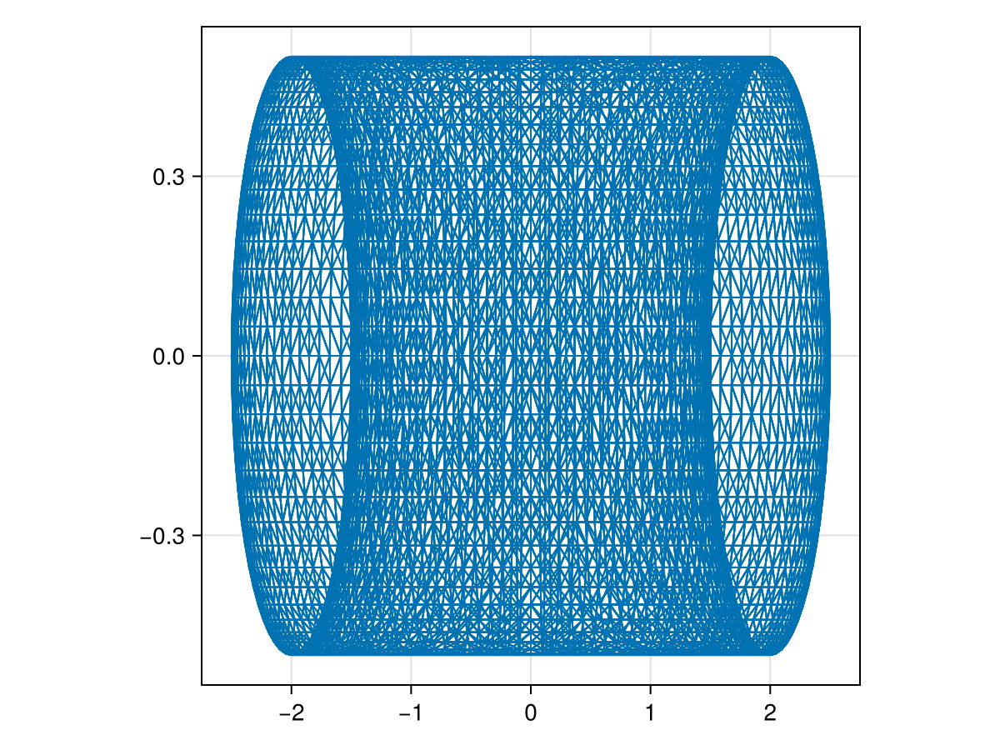

Implement Oceananigans.jl's NonhydrostaticModel in the Discrete Exterior Calculus
Let's use Decapodes to implement the NonhydrostaticModel from Oceananigans.jl. We will take the opportunity to demonstrate how we can use our "algebra of model compositions" to encode certain guarantees on the models we generate. We will use the 2D Turbulence as a guiding example, and use only equations found in the Oceananigans docs to construct our model.
The full code that generated these results is available in a julia script.
# AlgebraicJulia Dependencies
using Catlab
using CombinatorialSpaces
using Decapodes
using DiagrammaticEquations
# External Dependencies
using CairoMakie
using ComponentArrays
using Downloads
using GeometryBasics: Point3
using JLD2
using LinearAlgebra
using MLStyle
using OrdinaryDiffEq
Point3D = Point3{Float64};Specify our models
This is Equation 1: "The momentum conservation equation". This is the first formulation of mutual advection (of v along V, and V along v) that we could find in the exterior calculus.
momentum = @decapode begin
(v,V)::DualForm1
f::Form0
uˢ::DualForm1
∂tuˢ::DualForm1
p::DualForm0
b::DualForm0
ĝ::DualForm1
Fᵥ::DualForm1
StressDivergence::DualForm1
∂ₜ(v) ==
-ℒ₁(v,v) + 0.5*d(ι₁₁(v,v)) -
d(ι₁₁(v,V)) + ι₁₂(v,d(V)) + ι₁₂(V,d(v)) -
(f - ∘(d,⋆)(uˢ)) ∧ᵖᵈ₀₁ v -
d(p) +
b ∧ᵈᵈ₀₁ ĝ -
StressDivergence +
∂tuˢ +
Fᵥ
end
to_graphviz(momentum)Why did we write "StressDivergence" instead of ∇⋅τ, as in the linked equation? According to this docs page, the user makes a selection of what model to insert in place of the term ∇⋅τ. For example, in the isotropic case, Oceananigans.jl replaces this term with: ∇⋅τ = νΔv. Thus, we write StressDivergence, and replace this term with a choice of "turbulence closure" model. Using the "constant isotropic diffusivity" case, we can operate purely in terms of scalar-valued forms.
This is Equation 2: "The tracer conservation equation".
tracer_conservation = @decapode begin
(c,C,F,FluxDivergence)::DualForm0
(v,V)::DualForm1
∂ₜ(c) ==
-1*ι₁₁(v,d(c)) -
ι₁₁(V,d(c)) -
ι₁₁(v,d(C)) -
FluxDivergence +
F
end
to_graphviz(tracer_conservation)This is Equation 2: "Linear equation of state" of seawater buoyancy.
equation_of_state = @decapode begin
(b,T,S)::DualForm0
(g,α,β)::Constant
b == g*(α*T - β*S)
end
to_graphviz(equation_of_state)This is Equation 2: "Constant isotropic diffusivity".
isotropic_diffusivity = @decapode begin
v::DualForm1
c::DualForm0
StressDivergence::DualForm1
FluxDivergence::DualForm0
(κ,nu)::Constant
StressDivergence == nu*Δᵈ₁(v)
FluxDivergence == κ*Δᵈ₀(c)
end
to_graphviz(isotropic_diffusivity)
-->
<!-- Title: G Pages: 1 -->
<svg width="424pt" height="287pt"
viewBox="0.00 0.00 424.40 286.85" xmlns="http://www.w3.org/2000/svg" xmlns:xlink="http://www.w3.org/1999/xlink">
<g id="graph0" class="graph" transform="scale(1 1) rotate(0) translate(4 282.85)">
<title>G</title>
<polygon fill="white" stroke="transparent" points="-4,4 -4,-282.85 420.4,-282.85 420.4,4 -4,4"/>
<!-- n1 -->
<g id="node1" class="node">
<title>n1</title>
<ellipse fill="none" stroke="black" cx="130.65" cy="-227.25" rx="21.43" ry="10.71"/>
<text text-anchor="middle" x="130.65" y="-223.55" font-family="Times,serif" font-size="14.00">v:Ω̃₁</text>
</g>
<!-- n8 -->
<g id="node8" class="node">
<title>n8</title>
<ellipse fill="none" stroke="black" cx="115.65" cy="-148.82" rx="29.9" ry="10.71"/>
<text text-anchor="middle" x="115.65" y="-145.12" font-family="Times,serif" font-size="14.00">•2:Ω•</text>
</g>
<!-- n1&%2345;>n8 -->
<g id="edge5" class="edge">
<title>n1&%2345;>n8</title>
<path fill="none" stroke="black" d="M127.02,-216.66C125.16,-211.41 123.01,-204.74 121.65,-198.64 119.15,-187.39 117.62,-174.43 116.73,-164.69"/>
<polygon fill="black" stroke="black" points="118.47,-164.47 116.3,-159.64 114.98,-164.77 118.47,-164.47"/>
<text text-anchor="middle" x="132.15" y="-184.33" font-family="Times,serif" font-size="14.00">Δᵈ₁</text>
</g>
<!-- n2 -->
<g id="node2" class="node">
<title>n2</title>
<ellipse fill="none" stroke="black" cx="239.65" cy="-227.25" rx="20.51" ry="10.71"/>
<text text-anchor="middle" x="239.65" y="-223.55" font-family="Times,serif" font-size="14.00">c:Ω̃₀</text>
</g>
<!-- n7 -->
<g id="node7" class="node">
<title>n7</title>
<ellipse fill="none" stroke="black" cx="244.65" cy="-148.82" rx="29.9" ry="10.71"/>
<text text-anchor="middle" x="244.65" y="-145.12" font-family="Times,serif" font-size="14.00">•1:Ω•</text>
</g>
<!-- n2&%2345;>n7 -->
<g id="edge6" class="edge">
<title>n2&%2345;>n7</title>
<path fill="none" stroke="black" d="M240.29,-216.57C241.14,-203.55 242.66,-180.25 243.66,-164.92"/>
<polygon fill="black" stroke="black" points="245.43,-164.77 244.01,-159.66 241.94,-164.54 245.43,-164.77"/>
<text text-anchor="middle" x="254.15" y="-184.33" font-family="Times,serif" font-size="14.00">Δᵈ₀</text>
</g>
<!-- n3 -->
<g id="node3" class="node">
<title>n3</title>
<ellipse fill="none" stroke="black" cx="104.65" cy="-10.61" rx="104.8" ry="10.71"/>
<text text-anchor="middle" x="104.65" y="-6.91" font-family="Times,serif" font-size="14.00">StressDivergence:Ω̃₁</text>
</g>
<!-- n4 -->
<g id="node4" class="node">
<title>n4</title>
<ellipse fill="none" stroke="black" cx="321.65" cy="-10.61" rx="94.51" ry="10.71"/>
<text text-anchor="middle" x="321.65" y="-6.91" font-family="Times,serif" font-size="14.00">FluxDivergence:Ω̃₀</text>
</g>
<!-- n5 -->
<g id="node5" class="node">
<title>n5</title>
<ellipse fill="none" stroke="black" cx="302.65" cy="-188.03" rx="25.41" ry="10.71"/>
<text text-anchor="middle" x="302.65" y="-184.33" font-family="Times,serif" font-size="14.00">κ:ΩC</text>
</g>
<!-- n12 -->
<g id="node12" class="node">
<title>n12</title>
<polygon fill="none" stroke="black" points="337.65,-87.21 283.65,-87.21 283.65,-72.21 337.65,-72.21 337.65,-87.21"/>
<text text-anchor="middle" x="310.65" y="-76.01" font-family="Times,serif" font-size="14.00">ΩC×Ω•</text>
</g>
<!-- n5&%2345;>n12 -->
<g id="edge10" class="edge">
<title>n5&%2345;>n12</title>
<path fill="none" stroke="black" stroke-dasharray="5,2" d="M303.39,-177.22C304.87,-157.59 308.18,-113.56 309.77,-92.44"/>
<polygon fill="black" stroke="black" points="311.52,-92.48 310.15,-87.36 308.03,-92.22 311.52,-92.48"/>
<text text-anchor="middle" x="314.15" y="-145.12" font-family="Times,serif" font-size="14.00">π₁</text>
</g>
<!-- n6 -->
<g id="node6" class="node">
<title>n6</title>
<ellipse fill="none" stroke="black" cx="183.65" cy="-188.03" rx="31.64" ry="10.71"/>
<text text-anchor="middle" x="183.65" y="-184.33" font-family="Times,serif" font-size="14.00">nu:ΩC</text>
</g>
<!-- n11 -->
<g id="node11" class="node">
<title>n11</title>
<polygon fill="none" stroke="black" points="142.65,-87.21 88.65,-87.21 88.65,-72.21 142.65,-72.21 142.65,-87.21"/>
<text text-anchor="middle" x="115.65" y="-76.01" font-family="Times,serif" font-size="14.00">ΩC×Ω•</text>
</g>
<!-- n6&%2345;>n11 -->
<g id="edge7" class="edge">
<title>n6&%2345;>n11</title>
<path fill="none" stroke="black" stroke-dasharray="5,2" d="M178.3,-177.21C169.67,-161.6 151.91,-130.32 134.65,-105.21 131.45,-100.56 127.68,-95.6 124.34,-91.37"/>
<polygon fill="black" stroke="black" points="125.68,-90.24 121.19,-87.42 122.94,-92.42 125.68,-90.24"/>
<text text-anchor="middle" x="176.15" y="-145.12" font-family="Times,serif" font-size="14.00">π₁</text>
</g>
<!-- n7&%2345;>n12 -->
<g id="edge11" class="edge">
<title>n7&%2345;>n12</title>
<path fill="none" stroke="black" stroke-dasharray="5,2" d="M252.2,-138.31C259.41,-129.42 270.77,-115.95 281.65,-105.21 286.78,-100.15 292.82,-94.94 298.06,-90.64"/>
<polygon fill="black" stroke="black" points="299.45,-91.76 302.23,-87.25 297.25,-89.04 299.45,-91.76"/>
<text text-anchor="middle" x="289.15" y="-109.01" font-family="Times,serif" font-size="14.00">π₂</text>
</g>
<!-- n8&%2345;>n11 -->
<g id="edge8" class="edge">
<title>n8&%2345;>n11</title>
<path fill="none" stroke="black" stroke-dasharray="5,2" d="M115.65,-138.21C115.65,-126.15 115.65,-105.51 115.65,-92.51"/>
<polygon fill="black" stroke="black" points="117.4,-92.46 115.65,-87.46 113.9,-92.46 117.4,-92.46"/>
<text text-anchor="middle" x="123.15" y="-109.01" font-family="Times,serif" font-size="14.00">π₂</text>
</g>
<!-- n9 -->
<g id="node9" class="node">
<title>n9</title>
</g>
<!-- n9&%2345;>n1 -->
<g id="edge1" class="edge">
<title>n9&%2345;>n1</title>
<path fill="none" stroke="black" d="M207.54,-274.93C201.68,-272.34 184.84,-264.69 171.65,-256.85 162.88,-251.64 153.51,-245.18 145.95,-239.72"/>
<polygon fill="black" stroke="black" points="146.57,-238 141.5,-236.47 144.51,-240.83 146.57,-238"/>
</g>
<!-- n9&%2345;>n2 -->
<g id="edge2" class="edge">
<title>n9&%2345;>n2</title>
<path fill="none" stroke="black" d="M210.39,-274.68C213.2,-270.23 223.38,-254.07 230.94,-242.06"/>
<polygon fill="black" stroke="black" points="232.61,-242.7 233.8,-237.54 229.65,-240.84 232.61,-242.7"/>
</g>
<!-- n9&%2345;>n5 -->
<g id="edge3" class="edge">
<title>n9&%2345;>n5</title>
<path fill="none" stroke="black" d="M211.72,-274.93C219.87,-271.23 250.19,-256.75 269.65,-237.85 280.22,-227.6 289.34,-213.44 295.29,-203.01"/>
<polygon fill="black" stroke="black" points="296.9,-203.73 297.8,-198.51 293.84,-202.02 296.9,-203.73"/>
</g>
<!-- n9&%2345;>n6 -->
<g id="edge4" class="edge">
<title>n9&%2345;>n6</title>
<path fill="none" stroke="black" d="M209.28,-274.63C207.01,-267.03 194.73,-226.04 188.03,-203.65"/>
<polygon fill="black" stroke="black" points="189.64,-202.94 186.53,-198.65 186.29,-203.95 189.64,-202.94"/>
</g>
<!-- n10 -->
<g id="node10" class="node">
<title>n10</title>
</g>
<!-- n11&%2345;>n3 -->
<g id="edge9" class="edge">
<title>n11&%2345;>n3</title>
<path fill="none" stroke="black" d="M114.56,-72.03C112.83,-61.5 109.43,-40.76 107.1,-26.54"/>
<polygon fill="black" stroke="black" points="108.77,-25.92 106.24,-21.27 105.32,-26.48 108.77,-25.92"/>
<text text-anchor="middle" x="115.15" y="-43.01" font-family="Times,serif" font-size="14.00">*</text>
</g>
<!-- n12&%2345;>n4 -->
<g id="edge12" class="edge">
<title>n12&%2345;>n4</title>
<path fill="none" stroke="black" d="M311.75,-72.03C313.47,-61.5 316.87,-40.76 319.2,-26.54"/>
<polygon fill="black" stroke="black" points="320.99,-26.48 320.07,-21.27 317.53,-25.92 320.99,-26.48"/>
<text text-anchor="middle" x="321.15" y="-43.01" font-family="Times,serif" font-size="14.00">*</text>
</g>
</g>
</svg>
)
Compatibility Guarantees via Operadic Composition
Decapodes composition is formally known as an "operad algebra". That means that we don't have to encode our composition in a single undirected wiring diagram (UWD) and then apply it. Rather, we can define several UWDs, compose those, and then apply those. Of course, since the output of oapply is another Decapode, we could perform an intermediate oapply, if that is convenient.
Besides it being convenient to break apart large UWDs into component UWDs, this hierarchical composition can enforce rules on our physical quantities.
For example:
- We want all the tracers (salinity, temperature, etc.) in our physics to obey the same conservation equation.
- We want them to obey the same "turbulence closure", which affects their flux-divergence term.
- At the same time, a choice of turbulence closure doesn't just affect (each of) the flux-divergence terms, it also constrains which stress-divergence is physically valid in the momentum equation.
We will use our operad algebra to guarantee model compatibility and physical consistency, guarantees that would be burdensome to fit into a one-off type system.
Here, we specify the equations that any tracer obeys:
tracer_composition = @relation () begin
# "The turbulence closure selected by the user determines the form of ... diffusive flux divergence"
turbulence(FD,v,c)
continuity(FD,v,c)
end
draw_composition(tracer_composition)
-->
<!-- Title: G Pages: 1 -->
<svg width="284pt" height="306pt"
viewBox="0.00 0.00 284.41 306.24" xmlns="http://www.w3.org/2000/svg" xmlns:xlink="http://www.w3.org/1999/xlink">
<g id="graph0" class="graph" transform="scale(1 1) rotate(0) translate(4 302.24)">
<title>G</title>
<polygon fill="white" stroke="transparent" points="-4,4 -4,-302.24 280.41,-302.24 280.41,4 -4,4"/>
<!-- n1 -->
<g id="box1" class="node">
<title>n1</title>
<ellipse fill="none" stroke="black" cx="178.64" cy="-18" rx="50.75" ry="18"/>
<text text-anchor="middle" x="178.64" y="-14.3" font-family="Serif" font-size="14.00">turbulence</text>
</g>
<!-- n3 -->
<!-- junction -->
<g id="junction1" class="node">
<title>n3</title>
<ellipse fill="black" stroke="black" cx="24.5" cy="-68.08" rx="2.5" ry="2.5"/>
<text text-anchor="middle" x="11" y="-74.38" font-family="Serif" font-size="14.00">FD</text>
</g>
<!-- n1&%2345;&%2345;n3 -->
<g id="edge1" class="edge">
<title>n1&%2345;&%2345;n3</title>
<path fill="none" stroke="black" d="M140.93,-30.25C100.29,-43.46 39.69,-63.15 26.92,-67.3"/>
</g>
<!-- n4 -->
<!-- junction -->
<g id="junction2" class="node">
<title>n4</title>
<ellipse fill="black" stroke="black" cx="273.91" cy="-149.12" rx="2.5" ry="2.5"/>
<text text-anchor="middle" x="266.91" y="-155.42" font-family="Serif" font-size="14.00">v</text>
</g>
<!-- n1&%2345;&%2345;n4 -->
<g id="edge3" class="edge">
<title>n1&%2345;&%2345;n4</title>
<path fill="none" stroke="black" d="M191.49,-35.68C214.85,-67.84 262.76,-133.78 272.25,-146.84"/>
</g>
<!-- n5 -->
<!-- junction -->
<g id="junction3" class="node">
<title>n5</title>
<ellipse fill="black" stroke="black" cx="24.5" cy="-230.16" rx="2.5" ry="2.5"/>
<text text-anchor="middle" x="18" y="-236.46" font-family="Serif" font-size="14.00">c</text>
</g>
<!-- n1&%2345;&%2345;n5 -->
<g id="edge5" class="edge">
<title>n1&%2345;&%2345;n5</title>
<path fill="none" stroke="black" d="M165.76,-35.72C131.32,-83.13 38.82,-210.44 25.99,-228.11"/>
</g>
<!-- n2 -->
<g id="box2" class="node">
<title>n2</title>
<ellipse fill="none" stroke="black" cx="178.64" cy="-280.24" rx="47.86" ry="18"/>
<text text-anchor="middle" x="178.64" y="-276.54" font-family="Serif" font-size="14.00">continuity</text>
</g>
<!-- n2&%2345;&%2345;n3 -->
<g id="edge2" class="edge">
<title>n2&%2345;&%2345;n3</title>
<path fill="none" stroke="black" d="M166.03,-262.88C131.8,-215.77 38.89,-87.89 25.99,-70.14"/>
</g>
<!-- n2&%2345;&%2345;n4 -->
<g id="edge4" class="edge">
<title>n2&%2345;&%2345;n4</title>
<path fill="none" stroke="black" d="M191.29,-262.83C214.57,-230.78 262.71,-164.54 272.24,-151.41"/>
</g>
<!-- n2&%2345;&%2345;n5 -->
<g id="edge6" class="edge">
<title>n2&%2345;&%2345;n5</title>
<path fill="none" stroke="black" d="M142.5,-268.5C101.93,-255.31 40.03,-235.2 26.97,-230.96"/>
</g>
</g>
</svg>
)
Let's "lock in" isotropic diffusivity by doing an intermediate oapply.
isotropic_tracer = apex(oapply(tracer_composition, [
Open(isotropic_diffusivity, [:FluxDivergence, :v, :c]),
Open(tracer_conservation, [:FluxDivergence, :v, :c])]))
to_graphviz(isotropic_tracer)Let's use this building-block tracer physics at the next level. The quotes that appear in this composition diagram appear directly in the Oceananigans.jl docs.
nonhydrostatic_composition = @relation () begin
# "The turbulence closure selected by the user determines the form of stress divergence"
# => Note that the StressDivergence term, SD, is shared by momentum and all the tracers.
momentum(V, v, b, SD)
# "Both T and S obey the tracer conservation equation"
# => Temperature and Salinity both receive a copy of the tracer physics.
temperature(V, v, T, SD, nu)
salinity(V, v, S, SD, nu)
# "Buoyancy is determined from a linear equation of state"
# => The b term in momentum is that described by the equation of state here.
eos(b, T, S)
end
draw_composition(nonhydrostatic_composition)
-->
<!-- Title: G Pages: 1 -->
<svg width="693pt" height="681pt"
viewBox="0.00 0.00 693.25 681.49" xmlns="http://www.w3.org/2000/svg" xmlns:xlink="http://www.w3.org/1999/xlink">
<g id="graph0" class="graph" transform="scale(1 1) rotate(0) translate(4 677.49)">
<title>G</title>
<polygon fill="white" stroke="transparent" points="-4,4 -4,-677.49 689.25,-677.49 689.25,4 -4,4"/>
<!-- n1 -->
<g id="box1" class="node">
<title>n1</title>
<ellipse fill="none" stroke="black" cx="630.34" cy="-150.78" rx="52.96" ry="18"/>
<text text-anchor="middle" x="630.34" y="-147.08" font-family="Serif" font-size="14.00">momentum</text>
</g>
<!-- n5 -->
<!-- junction -->
<g id="junction1" class="node">
<title>n5</title>
<ellipse fill="black" stroke="black" cx="489.77" cy="-28.97" rx="2.5" ry="2.5"/>
<text text-anchor="middle" x="482.27" y="-35.27" font-family="Serif" font-size="14.00">V</text>
</g>
<!-- n1&%2345;&%2345;n5 -->
<g id="edge1" class="edge">
<title>n1&%2345;&%2345;n5</title>
<path fill="none" stroke="black" d="M610.8,-133.84C575.79,-103.51 504.84,-42.03 491.84,-30.76"/>
</g>
<!-- n6 -->
<!-- junction -->
<g id="junction2" class="node">
<title>n6</title>
<ellipse fill="black" stroke="black" cx="136.47" cy="-79.77" rx="2.5" ry="2.5"/>
<text text-anchor="middle" x="129.47" y="-86.07" font-family="Serif" font-size="14.00">v</text>
</g>
<!-- n1&%2345;&%2345;n6 -->
<g id="edge4" class="edge">
<title>n1&%2345;&%2345;n6</title>
<path fill="none" stroke="black" d="M581.18,-143.71C463.09,-126.73 170.86,-84.71 139.25,-80.17"/>
</g>
<!-- n7 -->
<!-- junction -->
<g id="junction3" class="node">
<title>n7</title>
<ellipse fill="black" stroke="black" cx="682.75" cy="-329.24" rx="2.5" ry="2.5"/>
<text text-anchor="middle" x="675.25" y="-335.54" font-family="Serif" font-size="14.00">b</text>
</g>
<!-- n1&%2345;&%2345;n7 -->
<g id="edge7" class="edge">
<title>n1&%2345;&%2345;n7</title>
<path fill="none" stroke="black" d="M635.66,-168.87C647.83,-210.34 677.09,-309.99 682.03,-326.81"/>
</g>
<!-- n8 -->
<!-- junction -->
<g id="junction4" class="node">
<title>n8</title>
<ellipse fill="black" stroke="black" cx="305.66" cy="-2.5" rx="2.5" ry="2.5"/>
<text text-anchor="middle" x="292.16" y="-8.8" font-family="Serif" font-size="14.00">SD</text>
</g>
<!-- n1&%2345;&%2345;n8 -->
<g id="edge9" class="edge">
<title>n1&%2345;&%2345;n8</title>
<path fill="none" stroke="black" d="M598.62,-136.29C522.03,-101.31 331.56,-14.33 308.06,-3.59"/>
</g>
<!-- n2 -->
<g id="box2" class="node">
<title>n2</title>
<ellipse fill="none" stroke="black" cx="136.47" cy="-578.72" rx="58.06" ry="18"/>
<text text-anchor="middle" x="136.47" y="-575.02" font-family="Serif" font-size="14.00">temperature</text>
</g>
<!-- n2&%2345;&%2345;n5 -->
<g id="edge2" class="edge">
<title>n2&%2345;&%2345;n5</title>
<path fill="none" stroke="black" d="M147.82,-561.05C205.7,-471 465.99,-65.98 488.25,-31.33"/>
</g>
<!-- n2&%2345;&%2345;n6 -->
<g id="edge5" class="edge">
<title>n2&%2345;&%2345;n6</title>
<path fill="none" stroke="black" d="M136.47,-560.67C136.47,-475.41 136.47,-115.8 136.47,-82.28"/>
</g>
<!-- n2&%2345;&%2345;n8 -->
<g id="edge10" class="edge">
<title>n2&%2345;&%2345;n8</title>
<path fill="none" stroke="black" d="M141.81,-560.52C169.34,-466.79 294.25,-41.37 304.93,-4.98"/>
</g>
<!-- n9 -->
<!-- junction -->
<g id="junction5" class="node">
<title>n9</title>
<ellipse fill="black" stroke="black" cx="305.66" cy="-655.99" rx="2.5" ry="2.5"/>
<text text-anchor="middle" x="298.16" y="-662.29" font-family="Serif" font-size="14.00">T</text>
</g>
<!-- n2&%2345;&%2345;n9 -->
<g id="edge12" class="edge">
<title>n2&%2345;&%2345;n9</title>
<path fill="none" stroke="black" d="M169.49,-593.8C213.73,-614.01 288.39,-648.1 303.1,-654.82"/>
</g>
<!-- n10 -->
<!-- junction -->
<g id="junction6" class="node">
<title>n10</title>
<ellipse fill="black" stroke="black" cx="35.91" cy="-422.25" rx="2.5" ry="2.5"/>
<text text-anchor="middle" x="23.91" y="-428.55" font-family="Serif" font-size="14.00">nu</text>
</g>
<!-- n2&%2345;&%2345;n10 -->
<g id="edge14" class="edge">
<title>n2&%2345;&%2345;n10</title>
<path fill="none" stroke="black" d="M124.93,-560.77C101,-523.52 47.33,-440.02 37.48,-424.69"/>
</g>
<!-- n3 -->
<g id="box3" class="node">
<title>n3</title>
<ellipse fill="none" stroke="black" cx="35.91" cy="-236.24" rx="35.82" ry="18"/>
<text text-anchor="middle" x="35.91" y="-232.54" font-family="Serif" font-size="14.00">salinity</text>
</g>
<!-- n3&%2345;&%2345;n5 -->
<g id="edge3" class="edge">
<title>n3&%2345;&%2345;n5</title>
<path fill="none" stroke="black" d="M62.61,-224.05C154.95,-181.88 456.87,-44 487.29,-30.1"/>
</g>
<!-- n3&%2345;&%2345;n6 -->
<g id="edge6" class="edge">
<title>n3&%2345;&%2345;n6</title>
<path fill="none" stroke="black" d="M47.05,-218.9C70.78,-181.98 124.94,-97.71 134.88,-82.23"/>
</g>
<!-- n3&%2345;&%2345;n8 -->
<g id="edge11" class="edge">
<title>n3&%2345;&%2345;n8</title>
<path fill="none" stroke="black" d="M54.03,-220.54C110.73,-171.41 282.28,-22.76 303.5,-4.37"/>
</g>
<!-- n3&%2345;&%2345;n10 -->
<g id="edge15" class="edge">
<title>n3&%2345;&%2345;n10</title>
<path fill="none" stroke="black" d="M35.91,-254.42C35.91,-297.2 35.91,-401.99 35.91,-419.69"/>
</g>
<!-- n11 -->
<!-- junction -->
<g id="junction7" class="node">
<title>n11</title>
<ellipse fill="black" stroke="black" cx="489.77" cy="-629.52" rx="2.5" ry="2.5"/>
<text text-anchor="middle" x="482.27" y="-635.82" font-family="Serif" font-size="14.00">S</text>
</g>
<!-- n3&%2345;&%2345;n11 -->
<g id="edge16" class="edge">
<title>n3&%2345;&%2345;n11</title>
<path fill="none" stroke="black" d="M53.98,-251.9C134.77,-321.9 460.07,-603.78 487.87,-627.87"/>
</g>
<!-- n4 -->
<g id="box4" class="node">
<title>n4</title>
<ellipse fill="none" stroke="black" cx="630.34" cy="-507.71" rx="19.35" ry="18"/>
<text text-anchor="middle" x="630.34" y="-504.01" font-family="Serif" font-size="14.00">eos</text>
</g>
<!-- n4&%2345;&%2345;n7 -->
<g id="edge8" class="edge">
<title>n4&%2345;&%2345;n7</title>
<path fill="none" stroke="black" d="M635.46,-490.28C647.52,-449.23 677.04,-348.68 682.03,-331.7"/>
</g>
<!-- n4&%2345;&%2345;n9 -->
<g id="edge13" class="edge">
<title>n4&%2345;&%2345;n9</title>
<path fill="none" stroke="black" d="M612.89,-515.68C549.4,-544.68 333.17,-643.43 308.05,-654.9"/>
</g>
<!-- n4&%2345;&%2345;n11 -->
<g id="edge17" class="edge">
<title>n4&%2345;&%2345;n11</title>
<path fill="none" stroke="black" d="M616.09,-520.06C583.42,-548.37 504.94,-616.38 491.69,-627.86"/>
</g>
</g>
</svg>
)
isotropic_nonhydrostatic_buoyancy = apex(oapply(nonhydrostatic_composition, [
Open(momentum, [:V, :v, :b, :StressDivergence]),
Open(isotropic_tracer, [:continuity_V, :v, :c, :turbulence_StressDivergence, :turbulence_nu]),
Open(isotropic_tracer, [:continuity_V, :v, :c, :turbulence_StressDivergence, :turbulence_nu]),
Open(equation_of_state, [:b, :T, :S])]));
to_graphviz(isotropic_nonhydrostatic_buoyancy)Our Mesh
We execute these dynamics on the torus explicitly, instead of using a square with periodic boundary conditions.
# This is a torus with resolution of its dual mesh similar to that
# used by Oceananigans (explicitly represented as a torus, not as a
# square with periodic boundary conditions!)
Downloads.download("https://cise.ufl.edu/~luke.morris/torus.obj", "torus.obj")
s = EmbeddedDeltaSet2D("torus.obj")
sd = EmbeddedDeltaDualComplex2D{Bool,Float64,Point3D}(s)
subdivide_duals!(sd, Barycenter())
Results
In the DEC, vorticity is encoded with d⋆, and speed can be encoded with norm ♯. We can use our operators from CombinatorialSpaces.jl to create our GIFs.


[ Info: Page built in 6 seconds.
[ Info: This page was last built at 2024-09-04T18:24:46.665.